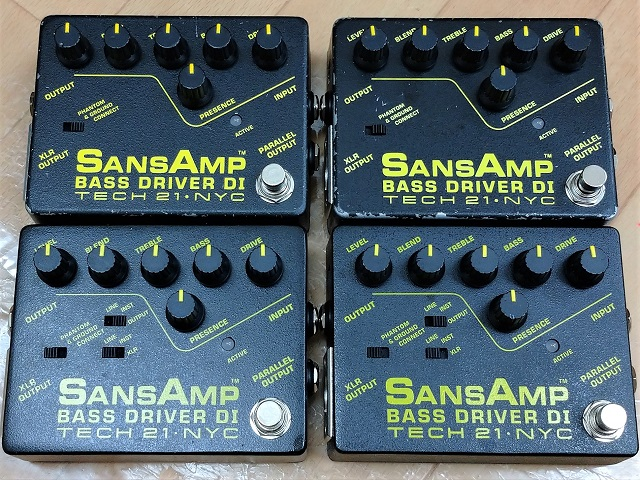
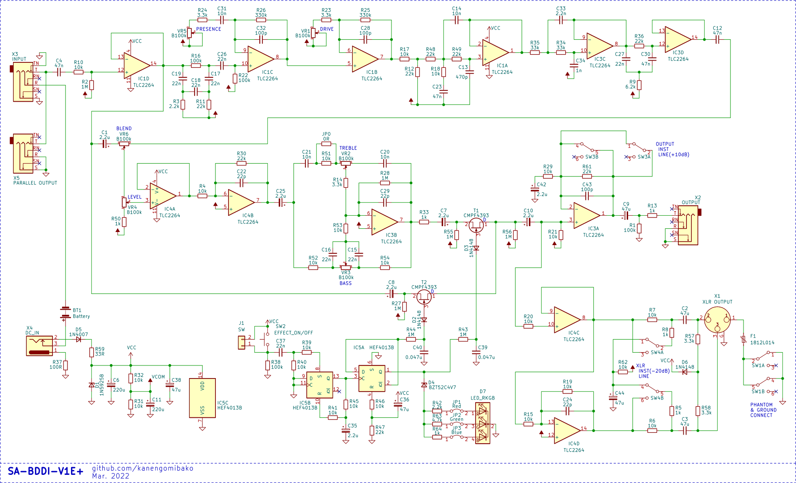
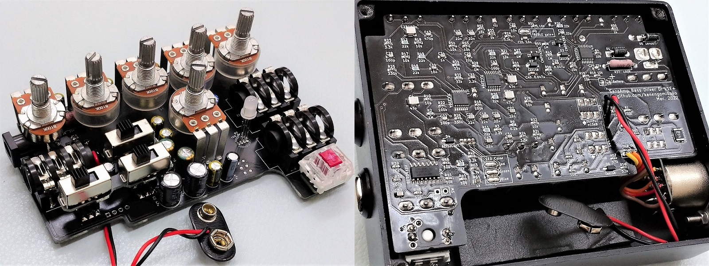
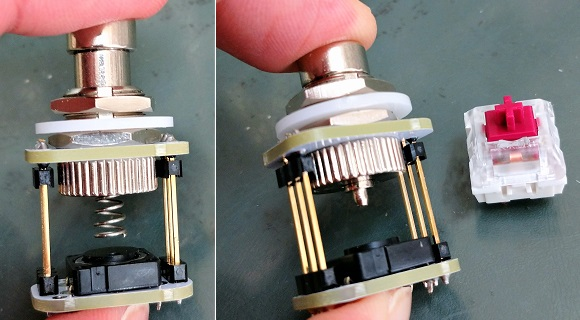
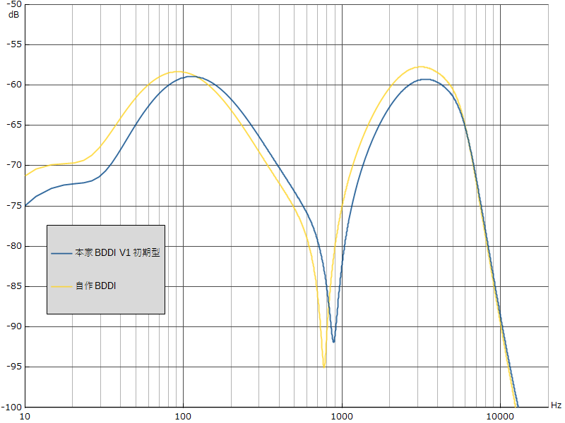
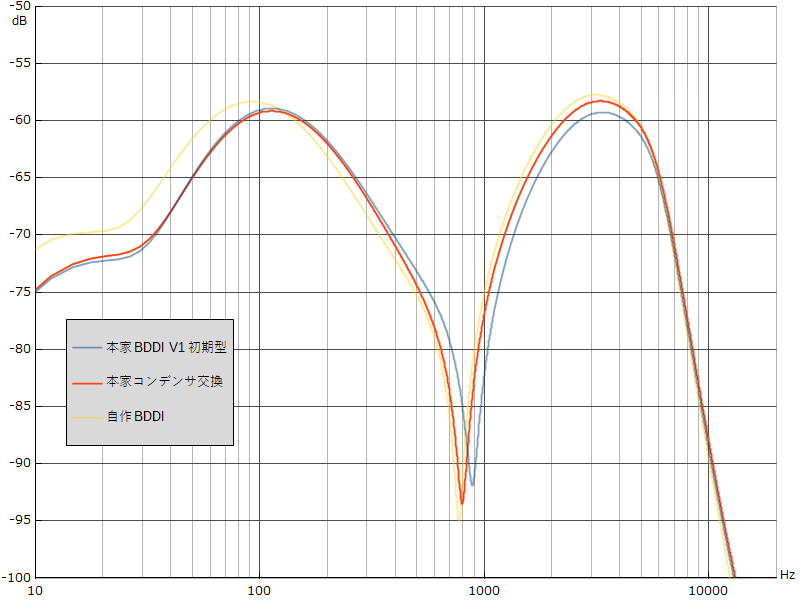

Tech 21 SansAmp Bass Driver DI V1E+
2022年04月11日 カテゴリー：自作エフェクター（アナログ）

Tech 21 SansAmp Bass Driver DI（以下BDDI）を解析し空のケースが4つ残ったので、中身を製作することにしました。
▽回路図（KiCadデータはGitHubへ）

元になっているのはV1初期型ですが、V1後期型のケースに収める際にはスライドスイッチの穴を有効活用したいので、V2と同様の出力レベル切替スイッチを設けています。
3色LEDの接続部分にはジャンパーを設けてあり、色を変更できます。2色以上にすることもできますが、LEDのスモーク処理がよくないのかあまりキレイに色が混ざらなかったです。トーン回路部分のジャンパーは、V1初期型で制限されていたTREBLEの増幅量を上げられるようになっています。ジャンパーありだと、TREBLE 85%程度でジャンパーなしの場合のTREBLE 100%と同じになります。
▽内部画像

分解する時は、DCジャックのみ半田を吸い取って取り外す必要があります。電源部には定格電力が高めの部品を使っているため、誤って高い電圧を供給してもすぐには壊れないはずです。とはいえ長時間使用でのテストはしていないため、供給電圧は9～11Vを推奨します。スライドスイッチは、秋月電子で購入したものを高さ調節して組み込んでいます。
アクチュエータースイッチは通常バネでタクトスイッチを押して使いますが、バネがなくても3mmぐらい突起部分が飛び出します。そこに加工したキーボード用スイッチをうまく配置し動作させています。物理的負荷が少ないので、耐久性が高いのではないかと考えています。

＜Tech21製との比較＞
今回の自作品とTech21製BDDI V1初期型（以下「本家」と記述）の周波数特性を比較しました。

PRESENCE 0% DRIVE 0% BLEND 100%での実測です。自作品はほぼシミュレーション通りですが、本家は少しズレているので原因を調査してみます。
周波数特性の谷となる周波数に与える影響が大きい、3つのコンデンサC17、C18、C19（全て22nF）に着目しました。容量の実測値は全て21nF程度で、そこまで減っていませんでした。他に考えられる影響は積層セラミックコンデンサ（以下MLCC）の特性の違いです。高誘電率系MLCC（X5R特性、Y5V特性等）は、温度・電圧等で静電容量変化しやすく、おそらく本家ではこのタイプのMLCCが使われています。自作品では静電容量変化がほとんどない温度補償用MLCC（C0G特性）を使っています。
・参考ページ→村田製作所 コンデンサガイド 静電容量の温度特性 静電容量の電圧特性 静電容量の経時変化
本家のC17、C18、C19をC0G特性のMLCC（22nF）に交換して測定しました。

谷となる周波数が低くなりました。他の箇所のMLCCもC0G特性のものに交換できれば、より自作品やシミュレーションの特性に近くなると思われます。逆に言うと、本家と同じ音に近づけるには高誘電率系MLCCを使った方がよいということになります。今回の自作品はそこまで本家に近づける意図はなく、安定した特性の方が望ましいと考え、MLCCの交換は行わずC0G特性のままとしています。